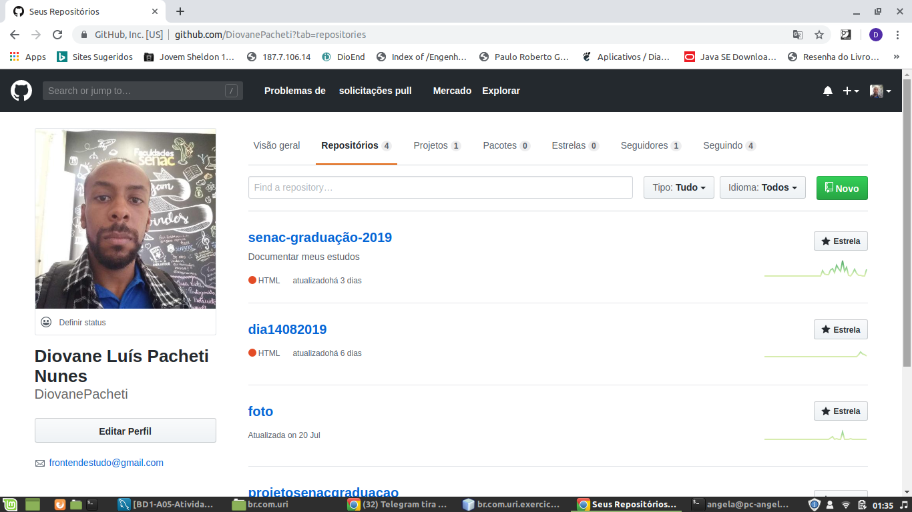

1ª PASSO - Criando um projeto no NetBeans
Git Criando o repositorio URI
2ª PASSO - Nomeando o projeto br.com.url.exercicios, utilizando uma convenção de nome de projeto em java.

3ª PASSO - Finalizando a criação do projeto que cria uma class com o mesmo nome do projeto

4ª PASSO - Abrindo o terminal no Linux Mint mas no Windows é o cmd
5ª PASSO - Acessando Diretório 'home' para poder acessar a pasta onde esta os arquivos do projeto em java na IDE NetBeans.
Comando para retornar diretório : cd ..

6ª PASSO - Estando dentro do diretório 'home'
usando o COMANDO : ls irá mostrar os arquivos existentes na pasta 'home', no Windows o COMANDO : dir

7ª PASSO - Acessando o diretório 'angela'
usando o COMANDO : cd espaço e nome do diretório angela ,depois o COMANDO 'ls' para listar os diretórios dentro da pasta.

8ª PASSO - O diretório 'NetBeansProjects' e o local onde ficam armazenados os projetos do NetBeans e onde iremos acessa-los .

9ª PASSO - Listando os arquivos e diretórios dentro do diretório 'NetBeansProjects' onde encontra-se o projeto que criei no NetBeans br.com.uri.exercicios .
10ª PASSO - Listando os arquivos e diretórios dentro do diretório 'br.com.uri.exercicios'.
11ª PASSO - Agora vou criar um repositório no github
12ª PASSO - Nomeando o repositório no github e depois finalizamos no botão criar repositório
13ª PASSO - Copiando comandos
14ª PASSO - Retornando para o terminal para colar os comandos que iram inicializar o repositorio .git e o arquivo README
após ser colado o comando sera executado
pressione Enter e sera pedido o email cadastrado no github
depois a senha
enviando os arquivos para o repositório

Agora vamos começar a manipular o GIT a ferramenta de versionamento
15ª PASSO - Utilizando o comando 'git status' com este comando se ouver arquivos modificados não adiciondo add ou comitado commit serão listado em vermelho
16ª PASSO - Agora adicionando os arquivos com o comando git add
. e
depois o git commit -m " entre as aspas comentamos
as acoes realizadas " existe outras formas de compo o comando git add
17ª PASSO - Utilizando o comando push --all para empurra todas as atualizaçoes pro repositorio no github
e-mail cadastrado
senha cadastrada
18ª PASSO - Os arquivos ja estão no github
19ª PASSO - Retornando para IDE NetBeans para criar um pacote para organizar os execícios do 'URI'
criando o pacote do execicio br.com.uri.exercicios.'extremamentebasico1001'
criando uma class dentro do pacote
nomeando a class 'ExtremamenteBasico' todos os nome de class começam com letra Maiuscula
resolvendo exercicio copiando o enunciado como comentario
desenvolvendo o exercicio
usando o comando git status para listar os arquivos modificados / criados
adicionando git add . e git commit -m " "
20ª PASSO - upado no github PRONTO !